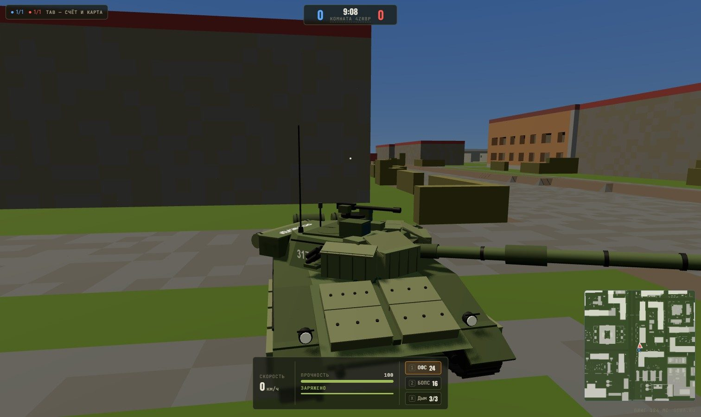
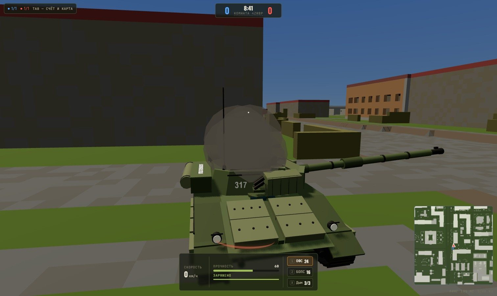
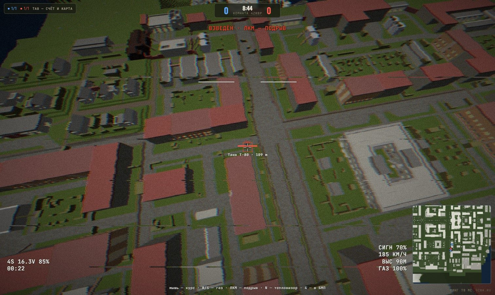
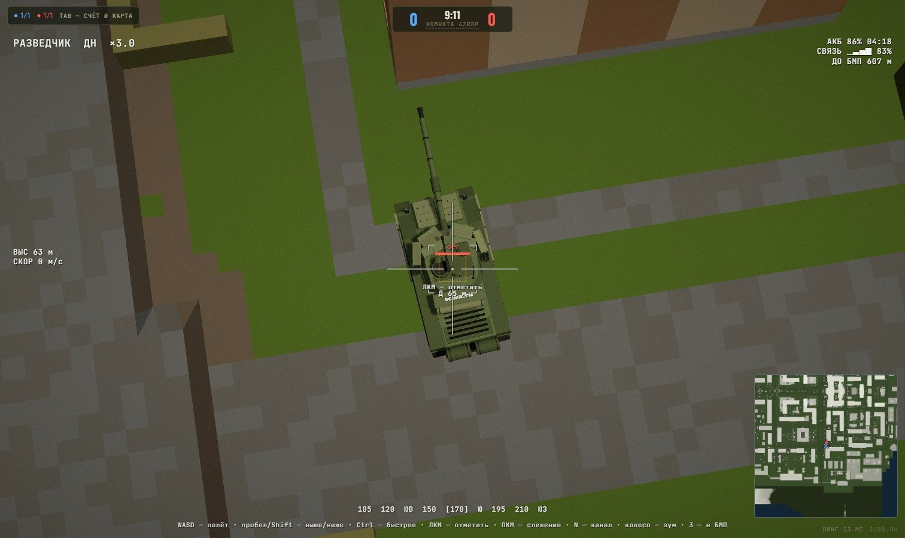
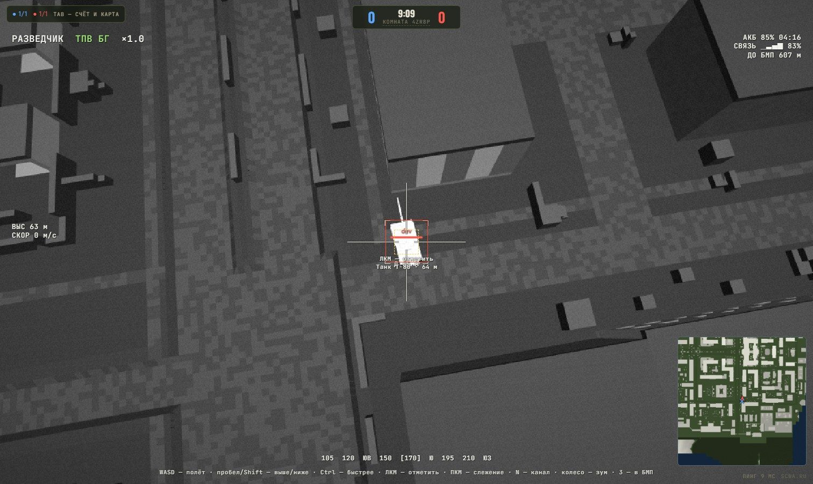
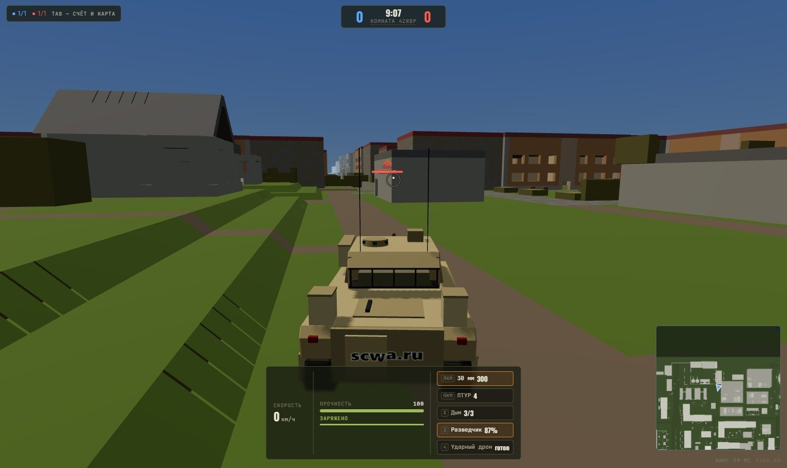
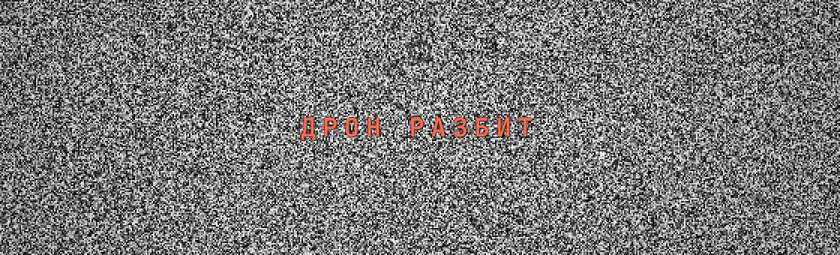
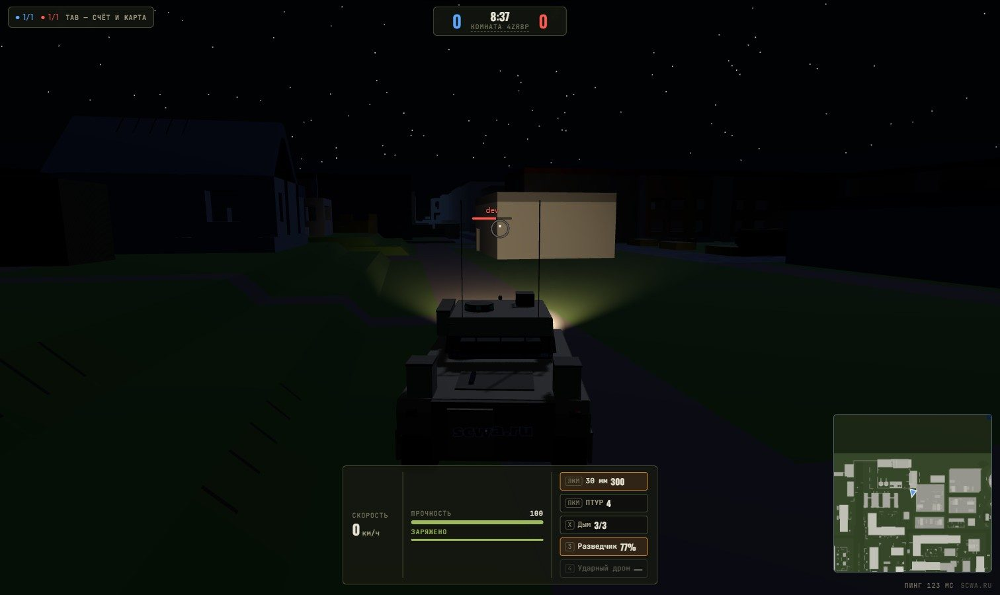

В прошлом выпуске радар был «чистый». Не был. Пока шёл сезон, мы собрали бои 5×5 прямо в браузере — на картах КВ, на своей технике, с самолётами, авианосцами и бронёй по честной геометрии. Бои уже открыты: заходите на scwa.ru/game. А сегодня в них прилетели дроны.
01 бои 5×5 открыто
Никаких клиентов и лаунчеров: страница «Бои» на сайте, комната по коду или из списка открытых, и вы на арене. Карты — те же, что в планировщике: Малая Бердовка, Хвойник, Низина, Кварталы, Роза ветров и полная Бердовка с текстурами игры. Баррикады и деревья ломаются тараном и снарядами, на новом раунде встают обратно.

Т-80 на Малой Бердовке. Внизу — прочность, боекомплект и дым, справа — миникарта.
02 техника новое
Синие воюют на западной технике, красные — на нашей. Сменить машину — клавиша T, со следующего возрождения. Все модели собраны процедурно, с живой ходовой: катки ходят на подвеске, лента собрана из траков.
| Класс | Синие | Красные | Чем воюет |
|---|---|---|---|
| Танк | Абрамс | Т-80 | ОФС и БОПС, дымовая завеса, фары |
| ЗСУ | ADATS | «Тунгуска» | 30 мм с неконтактным подрывом, ракеты по самолётам, радар на миникарте |
| БМП | Bradley | БМП-2 | 30-мм автопушка, ПТУР по лучу ствола, 100 км/ч, два дрона |
| Самолёт | F-16 | Су-30 | пушка, 6 ракет «воздух — воздух», 2 «воздух — земля», ловушки |
Самолёты взлетают с палубы своего авианосца в аномальном море вокруг карты и садятся туда же на перезарядку. Ракета пускается только по захвату головки: пилот слышит её тон и предупреждение, когда пустили по нему. Вираж и петля гасят скорость, так что воздушный бой — про энергию, а не про бесконечный форсаж.
Гусеничная физика переписана с нуля: твёрдое тело на подвеске, занос с искрами из-под гусениц, ручник на пробеле, отдача пушки, таран баррикад. Боекомплект ограничен — пополнение в своей зоне или на палубе.
03 броня и повреждения
Попадание считается по геометрии машины: корпус, башня, гусеницы и ствол — отдельные цели, броня в миллиметрах и с учётом угла. Лоб ОБТ держит, борт и корма — уже нет; под острым углом бронебойный уходит в рикошет.

Т-80 сразу после попадания в крышу: 60 прочности из 100. Чем — в следующем разделе.
Подбитая машина теряет башню, горит чёрным дымом и две минуты лежит остовом — за ним можно прятаться. J дважды — покинуть технику: башня уходит на парашюте.
04 дроны и разведка новое
Дроны запускаются с люка в корме: 3 — разведчик, 4 — ударный, та же клавиша — назад в машину. Дрон без пилота висит на месте. Пока вы в дроне, БМП стоит и уязвима; если по ней попали, в камере загорится «БМП ПОД ОГНЁМ».

Ударный FPV в пике на 185 км/ч. Рамка — Т-80, которого до этого отметил разведчик.
Квадрокоптер со стабилизированной камерой и зумом до ×30. ЛКМ — отметить противника под прицелом на 30 секунд. В реализме это единственный способ подсветить врага: отмеченный появляется у всей команды на миникарте и с меткой над целью — даже за стенами.


Слева — дневной канал, справа — тепловизор: техника горячая и видна среди домов и ночью.

Из БМП: красный ромб над отмеченным танком в 600 м, внизу — оба дрона и их заряд.
Летит туда, куда смотрит мышь, W/S — газ, без газа зависает. Взрывается от касания или по ЛКМ; взводится через пару секунд полёта и подальше от своей БМП. Боевая часть — осколочно-фугасная, тот же разбор брони, что у снаряда: лоб и борт танка ей не по зубам, крыша, решётки моторного отделения и корма — да. Лёгкую технику берёт с одного-двух. Можно медленно сесть у дороги и ждать цель в засаде.
3 / 4разведчик / ударный: запуск, управление, назад в БМП
WASD · пробел · Shiftразведчик: полёт, выше, ниже (Ctrl — быстрее)
ЛКМразведчик — отметить цель; ударный — подрыв
ПКМ · колесоразведчик: следить за точкой, кратность
W / Sударный: газ; на землю медленно — посадка-засада
Nкамера: день / тепловизор

Так выглядит конец полёта.
что это даёт
У БМП появилась своя роль: глаза команды в реализме и удар туда, куда танк не достанет. А у ЗСУ — работа и на земле.
05 ночь, погода, звук
Шесть видов погоды: ясный полдень, пасмурно, гроза с дождём и молниями, туман, закат и ночь со звёздами. Случайная погода меняется с каждым раундом. В темноте фары включаются сами (L — погасить, чтобы не светиться) и по-настоящему освещают дорогу.

Ночь на Бердовке.
Прицельная оптика самолёта (V) больше не чёрно-белая. По N включается тепловизор, ночью он стоит сам — вместо чёрного экрана видна горячая техника на сером фоне.
Звук объёмный: свой мотор у каждой стороны, траки, привод башни, разные выстрелы и попадания — пробил, не пробил, рикошет. Слышно пролёт самолёта, гром, дождь, хруст баррикад, жужжание дронов. Громкость каждого звука можно настроить отдельно.
Эффекты — в своём стиле и лёгкие: выхлоп и пыль из-под гусениц, искры в заносе, факел из погона подбитой машины, инверсионные следы на крыльях. На слабых видеокартах их можно выключить одной галочкой, а если кадров станет совсем мало, игра выключит их сама и подскажет, что проверить.
06 что дальше скоро
На межсезонье после текущего рейтингового сезона Stalzone мы планируем турнир по боям 5×5. Формат, призы и сетку расскажем отдельно.
поддержать проект
Всё из этого выпуска доступно всем кланам без подписок и ограничений. Но у сервиса есть реальные расходы, и если он помогает вашему клану, вы можете поддержать разработку.
Донат не влияет на доступ к функциям — он только ускоряет выход обновлений. Спасибо, что играете с нами.